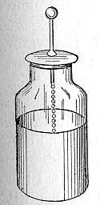

突然ですが皆さん、勉強などの、作業の間の息抜き、きちんとできていますか?この部誌では他の人が物理のことについて真面目に述べているので、この記事はその息抜き的な記事にしようと思って書いています。ということで僕たち、電子工作班員達の活動の基礎の基礎となっている、電気学の発展の概観を見ていきたいと思う。
〜静電気蓄電池 ライデン瓶～
1746年、オランダのピーテルがライデン大学で静電気を貯める「ライデン瓶」を発明した。ライデン瓶はガラス瓶(絶縁の要素)の内側と外側を金属(主に鉛)でコーティングし、内側のコーティングは金属製の鎖を通して終端が金属球となっているロッドに接続されているつくりになっており、瓶の上の球に電圧加えることによってガラスによって絶縁された導体の表面に電気が溜められるのである。溜まった電気は静電気であるが、このライデン瓶の発明によって、人々が静電気を蓄えられるようになったのである。
〜電池の発明 ガルバーニとボルタ〜
1799年にイタリアの物理学者、ボルタが電池を発明した。そして、そのきっかけは1791年のガルバーニが発表した動物電気の研究に遡る。ガルバーニは解剖されたカエルを使って実験物の両端がカエルに当たったところカエルが痙攣を起こしたかのように動き足したのである。これを発見したガルバーニはこれを動物から生み出された「動物電気」と言って論文にし、発表した。しかし実はこの動物電気、動物から生み出された電気ではなかったのである。二種類の金属が湿った物に触れた際に生じた電圧の差が原因であったのだ。そしてカエルの痙攣はただの検電の動きにしか過ぎなかったのである。
そこで、ボルタは銅と亜鉛を用いて電池を発明した。この発明は強い電流を安定して長時間供給することができるようにし、今まで未開拓な領域に留まっていた電気の研究を急速に発展させていくことになる。
〜センスの塊 マイケル・ファラデー〜
ここで、電磁気学の礎を築いた人たちの内の一人である、イギリスの科学者、マイケル・ファラデーである。少しファラデーの生い立ちと、前半生を見てみよう。ファラデーが生まれた家庭は、あまり裕福な家庭ではなく、高等な教育を受けておらず、数学の知識を身に着けていなかった14歳の時から、製本業に就いていた。ファラデーが製本業に就いたのはとても偶然なことであったが、この偶然がファラデーの人生と、科学の歴史を大きく変えることになるのである。
ファラデーは仕事の合間を縫って製本を依頼された本を読んだのである。特に電気と化学の分野に興味を持った。そして、このこともまた、一つの偶然であった。なぜなら、電気と化学の分野はそのころまだ発展途上であって、力学のように、理論で完全に一般化された分野とは違い、未開拓の分野であり、高等教育を受けていなく数学がまったくと言ってもいいほどできないが、実験のセンスに優れているファラデーが活躍できる余地が少なくなかったのだ。ファラデーの勉強の意欲に火がつき、なんとかして実験ができる環境に身を置きたいと考え、1812年に20歳になったファラデーは、電気分解を駆使して多くの元素を発見したデービーの講演を熱心に聴講し、デービーの行った実験をスケッチをまじえてノートに書き留め、デービー宛ての手紙と製本職人が製本したデービーの講義のノートを同封して、デービーに送ったのである。これが功を奏し、1813年3月からデービーのもとで働けるようになり、自由に実験を行えるようになり、数々の功績を残していくことになる。
その後、ファラデーは様々なことを発見していったが、中でも有名なのは、1831年の磁力線の着想と、同年の電磁誘導の法則の発見だろう(厳密に言うと、少し先にジョセフ・ヘンリーが発見している)。電磁誘導というのは、磁界が変化している環境にある導体に電圧が生じる現象(簡単に言うと”発電”)であり、この現象は発電機や、変圧器などの多くの電気機器の動作原理となっている。もちろん、この電磁誘導の法則も高等な数学は一切使われていなかった。
〜理論家 マクスウェル〜
その年6月、後にファラデーの行った実験を理論にする、マクスウェルが生まれた。マクスウェルは大地主跡取りに生まれ、ケンブリッジ大学を卒業した、典型的なエリートだった。彼は数学に長けていてそれを駆使して理論を築き上げるのである。貧困層に生まれ、あまり学歴のないファラデーとは実に対照的な人物である。
マクスウェルは若いころから才能を発揮している。1856年、マクスウェルは25歳で「土星の環の構造と安定性」について取り組み論文を提出し、翌年にアダムズ賞を受賞している。また、マクスウェルは1855年から1856年にかけて、「ファラデーの力線について」と題した研究をし、論文にまとめると、真っ先にそれを力線の提唱者ファラデーに送った。これを機に、後にファラデーとの交流が生まれていく。
さらに、マクスウェルは理論的に電磁波の存在を予想し、そして、マクスウェルは1864年に、ファラデーの電磁誘導の法則、アンペール=マクスウェルの法則、電場に関するガウスの法則、磁場に関するガウスの法則の4つの法則を結合し、今日、”マクスウェル方程式”と呼ばれる電磁気学の基礎方程式が確立したのである。この方程式は、アインシュタインが、特殊相対性理論の基本原理となった、光速度不変の原理を提唱する際にも役立っており、電磁気学の非常に重要なものとなっている。
ちなみに、それからマクスウェルはエーテルという、光が伝播する際に媒質となる、仮想媒質があるのを前提として波動方程式を求めたわけなのだが、このエーテル、今ではエーテルは存在しないと証明されたのである。しかし、この方程式そのものは正しいものである、という面白い展開になっている。このようなことも歴史を学ぶ上での面白さである。
このように、興味のある分野の歴史、あるいはそれに関わったたくさんの偉人達の生涯(特に、幼い頃は自部が後世に名を残すことなんて思ってもいなかった人がほとんどであるため、素の人間が見えて、より面白い)や考え方を知ることは、僕たちにいろんなことを考えさせてくれる、また、考える時の参考にもなるのである。そして何より、学校の歴史の勉強とは一味違う面白さで、調べていて楽しい!皆さんも、息抜き程度に調べてみるのはいかがですか?最後まで読んで下さりありがとうございました。
参考文献
- 『光と電磁気 ファラデーとマクスウェルが考えたこと 電場とは何か? 磁場とは何か?』小山慶太 著 発行所 株式会社講談社
- 電磁波- Wikipedia
- マクスウェルの方程式 - Wikipedia
- 電磁気現象とマクスウェル方程式｜通信の発展 - WebArchive
- 相対性理論 - Wikipedia
- エーテル_(物理) - Wikipedia
- ジェームズ・クラーク・マクスウェル - Wikipedia
- ハンフリー・デービー - Wikipedia
- 電気分解 - Wikipedia
- マイケル・ファラデー - Wikipedia
- ライデン瓶 - Wikipedia
- ボルタ電池 - Wikipedia